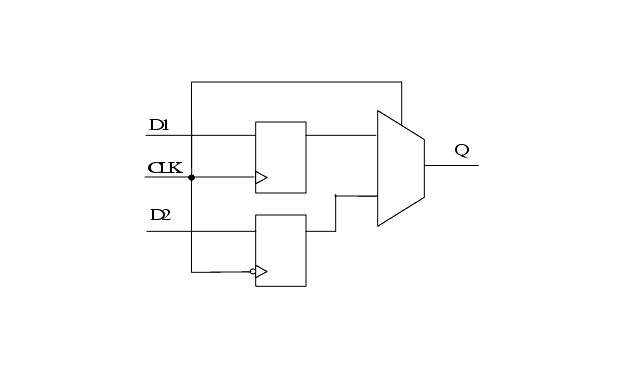

Description
This rule detects the ODDR flip-flops. Output DDR registers are used to clock output from the chip at twice the throughput of a single rising-edge clocking scheme.
Policy
DESIGN
Ruleset
STRUCTURE
Language
VHDL/Verilog
Type
Hardware
Severity
Note
module TEST (D1, D2, CLK, Q); input D1, D2, CLK; output Q; reg Q1, Q2, Q; always @(posedge CLK) begin Q1 <= D1; end always @(negedge CLK) begin Q2 <= D2; end GTECH_MUX2 U1 (.A(Q1), .B(Q2), .S(CLK), .Z(Q) ); endmodule
